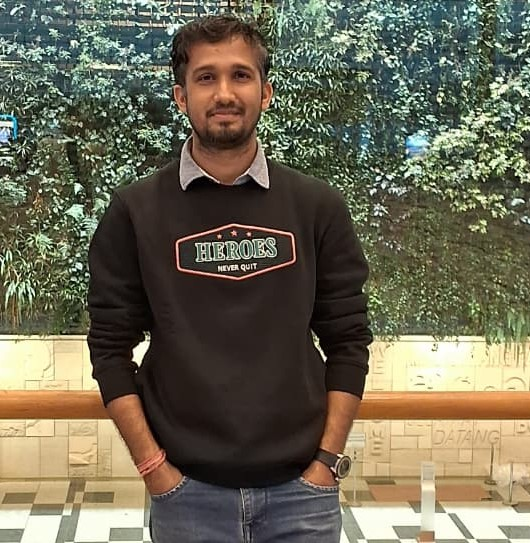

Hello (નમસ્તે), I'm Rajesh (રાજેશ)

Rajesh is a Postdoctoral Researcher in College of Computing and Data Science (CCDS) at Nanyang Technological University (NTU) Singapore, supervising by Assoc. Prof. Arvind Easwaran and Prof. Benoit Delinchant. Before joining NTU, he was working with same supervisors as an AI Scientist/Researcher in DesCartes project at CNRS@CREATE Ltd. Singapore, funded by the National Research Foundation (NRF) Singapore (March 2024-February 2025). He earned his Ph.D. in Data Analytics (AI) from Indian Institute of Technology Kharagpur, West Bengal, India, advised by Prof. Basab Chakraborty and Prof. Pabitra Mitra. His doctoral research focused on aligning data and artificial intelligence (AI) for sustainable energy management.
Recent News
- November 2025: Attended Future DigiLeader 2025 Conference by Digital Future, Stockholm, Sweden
- November 2025: Our paper awarded as Best Application Paper at 14th IEEE PES Innovative Smart Grid Technologies (ISGT), Asia conference held @Guangzhou, China during Oct. 31 - Nov. 2, 2025
- October 2025: Paper accepted at 14th IEEE PES Innovative Smart Grid Technologies (ISGT), Asia conference.
- October 2025: Paper accepted in Engineering Application for Artificial intelligence (EAAI), Elsevier.
- September 2025: Selected as one of the Future Digileaders 2025 by Digital Future, Stockholm, Sweden Digital Futures, Stockholm, Sweden. Awarded Travel and Accomodation to attend the conference. Thank you Digital Futures!
- June 2025: Invited as a visiting researcher @G2E Lab, Grenoble University Alpes (UGA), Grenoble, France for 3 weeks.
Research Interests
- Smart Grid Data Analytics
- Machine Learning (ML) for Time-series
- Interpretable ML and explainability
- Generative Models
Education
- Ph.D. (2018-2023) @Indian Institute of Technology Kharagpur, India
- M.Eng. (2010-2012) @Gujarat Technological University, Gujarat, India
- B.Eng. (2006-2010) @Veer Narmad South Gujarat University, Gujarat, India
Work Experience
- March 2025 - till date: Postdoctoral Researcher @Nanyang Technological University (NTU), Singapore
- March 2024 - February 2025: AI Scientist/Researcher @DesCartes, CNRS@CREATE Ltd. Singapore
- November 2023 - February 2024: Assistant Professor (Contractural) @Indian Institute of Information Technology (IIIT) Surat, Gujarat, India
- August 2012 - June 2018: Assistant Professor @G. H. Patel College of Engineering & Technology (GCET), Vallabh Vidyanagar, Gujarat, India
Publications
- Publication numbering is in the reverse chronological order (most recent to oldest).- [Pi] refers to the i-th publication.
- [Ci] refers to the i-th peer-reviewed conference publication.
- [Ji] refers to the i-th peer-reviewed journal publication.
- [P10][J07] October 2025: [Rajesh K. Ahir, Benoit Delinchant, Arvind Easwaran], Time-series clustering: A benchmark study on energy data with insights into demand response, Engineering Applications of Artificial Intelligence (IF: 8.0), Elsevier Read/Download
- [P09][C03] October 2025: [Michael Yuhas, Rajesh K. Ahir, Laksamana Vixell Tanjaya Hartono, Muhammad Dzaki Dwi Putranto, Arvind Easwaran, Suhono Harso Supangkat], Managing Charging Induced Grid Stress and Battery Degradation in Electric Taxi Fleets, 14th IEEE PES Innovative Smart Grid Technologies (ISGT), Asia conference held @Guangzhou, China during Oct. 31 - Nov. 2, 2025 Read/Download
- [P08][J06] May 2025: [Rajesh K. Ahir, Viral Biyawala, Shivam Sikotra], A two-phase data-driven approach for detection of solar PV and EV infrastructure in smart grid, Applied Energy (IF: 11.0), Elsevier Read/Download
- [P07][C02] July 2024: [Somalee Mitra, Rajesh K. Ahir, Basab Chakraborty], Data-driven Analytics for Power Theft detection in smart grid: An Unsupervised Deep-Learning Approach, 16th International Conference on Sustainable Energy & Environmental Protection "SEEP2024" September 09-12, 2024, at the University of Natural Resources and Life Science, Vienna.
- [P06][J05] January 2024: [Rajesh K. Ahir, Basab Chakraborty, Pabitra Mitra], Informed Change-Point Detection Approach for Solar Prosumer Detection and Statistical Verification in Smart Grid, IEEE Transactions on Smart Grid (IF: 9.8), IEEE Read/Download
- [P05][J04] August 2023: [Rajesh K. Ahir, Basab Chakraborty], A data-driven analytic approach for investigation of electricity demand variability for energy conservation programs, Energy (IF: 9.4), Elsevier Read/Download
- [P04][C01] September 2022: [Rajesh K. Ahir, Basab Chakraborty], Understanding the electricity demand variability for designing demand response and energy efficiency strategies using smart metering data, 14th International Conference on Sustainable Energy & Environmental Protection "SEEP2024" September 12-15, 2022, at the Brunel University, London.
- [P03][J03] June 2022: [Rajesh K. Ahir, Basab Chakraborty], Pattern-based and context-aware electricity theft detection in smart grid, Sustainable Energy, Grids and Networks (IF: 5.6), Elsevier Read/Download
- [P02][J02] May 2022: [Rajesh K. Ahir, Basab Chakraborty], A novel cluster-specific analysis framework for demand-side management and net metering using smart meter data, Sustainable Energy, Grids and Networks (IF: 5.6), Elsevier Read/Download
- [P01][J01] September 2021: [Rajesh K. Ahir, Basab Chakraborty], A meta-analytic approach for determining the success factors for energy conservation, Energy (IF: 9.4), Elsevier Read/Download
Contact
Email: rajeshkumar[dot]ahir[at]ntu[dot]edu[dot]sg
Or Connect me through: LinkedIn